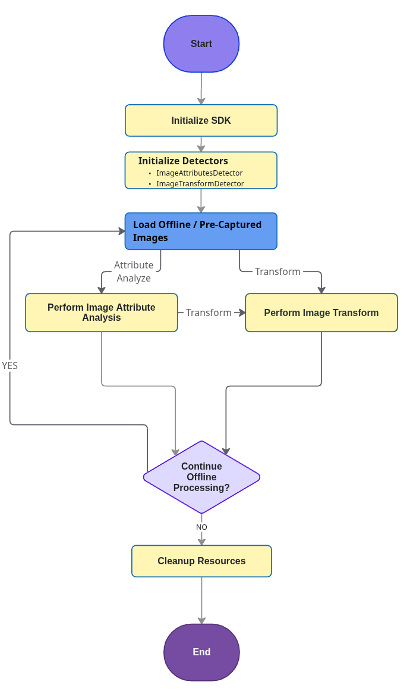
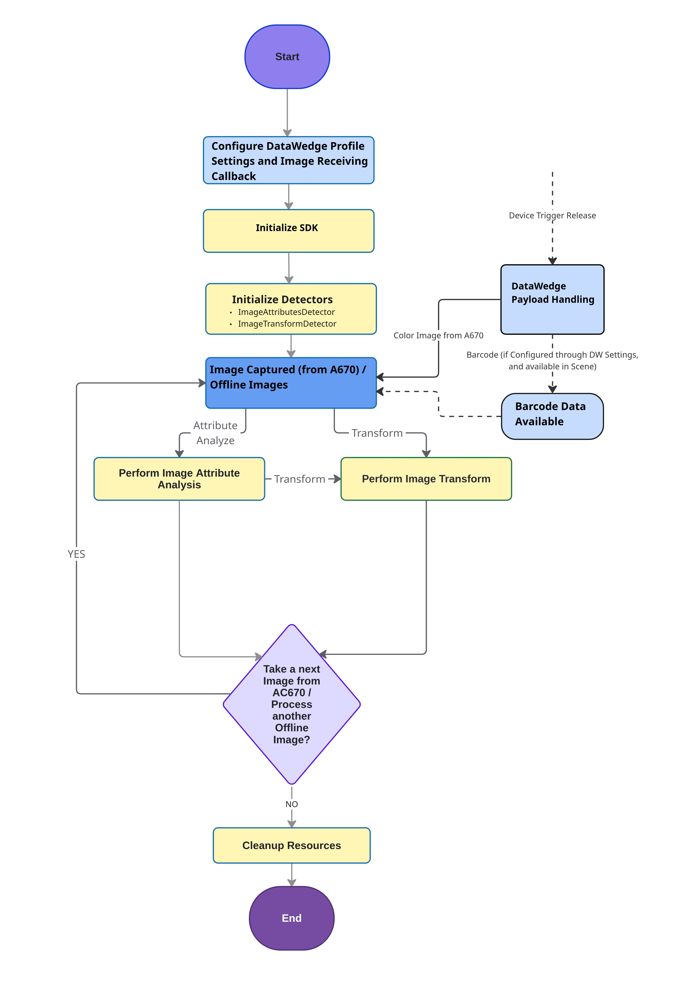

Overview
Picture Proof of Delivery (PPOD) is an on-device AI Blueprint that solves common challenges for delivery drivers. Under constant time pressure, drivers must capture clear, compliant images that show both the parcel and its surroundings, while simultaneously avoiding sensitive data like faces or license plates. This Blueprint simplifies the process, guiding the driver to get a compliant picture on the first attempt.
The Blueprint operates in two distinct stages:
- Compliance Check: Verifies the image meets compliance criteria (e.g., parcel is within the image).
- Image Enhancement: Post-processes the captured image (e.g. blur text) to ensure privacy and data security.
The specific options available for each stage are outlined below:
| Stage | Available Options |
|---|---|
| Compliance Check | • Ensure parcel is present • Ensure surroundings are shown • Ensure image is NOT blurry • Ensure people are NOT in image |
| Image Enhancement | • Blur People in Image • Blur Text in image • Blur Barcodes in Image |
The Blueprint is ready to be integrated into an Android application through a simplified pipeline exposed in Zebra’s AI Suite SDK.
Non-Guided vs. Guided PPOD
The PPOD Blueprint offers two operational modes: a Non-Guided mode for post-capture analysis and a Guided mode for live, interactive feedback.
Non-Guided mode operates with the device's rear camera or the color imager (if available on the device). The color imager captures the package barcode and the proof of delivery image simultaneously.
Choosing the right approach depends on the application's requirements for user interaction and workflow integration. The table below outlines the key differences.
| Aspect | Non-Guided PPOD - Rear Camera (Non-Interactive) |
Non-Guided PPOD - Color Imager (Non-Interactive) |
Guided PPOD - Rear Camera (Live Feedback) |
|---|---|---|---|
| Interaction Model | Post-capture & Non-interactive. Analysis happens after the image is taken. | Post-capture & Non-interactive. Analysis happens after the image is taken. | Live & Interactive. Provides real-time guidance before the image is taken. |
| Primary Use Case | Fast capture and non-disruptive batch processing of existing images. | Fast capture of package barcode and proof of delivery image to reduce delivery time while providing non-disruptive batch processing of existing images. | Prioritizing first-time image quality and compliance through live guidance. |
| Core Technology | ImageAttributesDetector & ImageTransformDetector on a static image. |
ImageAttributesDetector & ImageTransformDetector on a static image. |
EntityTrackerAnalyzer processing a live camera feed. |
Guided PPOD
For more information on the live feedback approach, see Guided PPOD within the CameraX section.
Non-Guided PPOD
The Non-Guided Picture Proof of Delivery (PPOD) is a flexible method for processing images after they have been captured by the rear camera or color imager. Unlike the guided (live feedback) model, this workflow focuses on analyzing pre-existing or newly captured images without real-time user guidance.
This method allows developers to embed an analysis and transformation pipeline into an existing application with minimal disruption to the established user workflow. The core process involves taking an image and passing it to one or more detectors to verify its compliance and redact sensitive information.
Key Characteristics:
- Post-Capture Analysis: Operates on images already captured from any source (camera, gallery, etc.).
- No Live Feedback: Does not use a live camera preview to provide real-time guidance.
- Minimal Disruption: Easily integrates as a background step in an existing application workflow (e.g., after a driver captures all their delivery photos).
- Component-Based: Primarily uses ImageAttributesDetector for compliance checks and the ImageTransformDetector for privacy redaction on a static image.
Select the appropriate workflow based on device usage:
Standard Workflow
The Non-Guided PPOD standard workflow provides a flexible pipeline for processing static images after capture from the rear camera. The process begins by initializing the SDK and the required detectors (ImageAttributesDetector, ImageTransformDetector). Once the image is loaded, there are two distinct processing paths available:
- Analyze then Transform: First, analyze the image with
ImageAttributesDetector, and then optionaally apply privacy redaction withImageTransformDetector. - Direct Transformation: Use
ImageTransformDetectorto directly apply privacy redaction without any prior analysis.

Non-Guided PPOD Standard Workflow
Color Imager Workflow
Devices equipped with the AC670 Color Imager support receiving a color image through DataWedge while simultaneously capturing the package barcode.
- Code & Pipeline Impact: The core PPOD pipeline and AI Data Capture SDK code remain unchanged. The only additional requirement is configuring the DataWedge profile to use Workflow Input with workflow ID
scan_and_snap. - Offline Compatibility: Adding this DataWedge configuration enables hardware-triggered capture without altering or restricting the default ability to load pre-captured and offline images.
- Trigger Handling: Pressing the device trigger automatically initiates image capture through DataWedge. Manual trigger listeners or camera management code are not required.
Requirements:
The following minimum version requirements must be met:
- Scanning Framework v43.63.44.0 or higher
- DataWedge version v15.0.90 or higher
Implementation Steps:
- Configure DataWedge Profile: Configure the DataWedge profile for the target application to perform image capture using Workflow Input with the workflow identifier
scan_and_snap. For simultaneous barcode decoding alongside the image, enable the target barcode symbologies in this profile. - Register Image Callback & Initialize SDK: Register an Intent broadcast receiver or callback to receive the image payload from DataWedge. Initialize the AI Data Capture SDK detectors:
ImageAttributesDetectorandImageTransformDetector. - Capture and Process Image: Press the hardware trigger on the device to initiate image capture. Depending on the profile configuration, the application receives either an Image or Image and Barcode. The captured image is returned in the callback Intent as a raw NV21 (
ImageFormat.NV21) byte array with width, height, and stride metadata. The received image then passes to the pipeline for PPOD attribute analysis and privacy redaction.
Reference Documentation & APIS:
For detailed information on configuring DataWedge Intent APIs and Workflow Input parameters, refer to the following resources:
- DataWedge "Scan and Snap" Workflow Input Configuration: Guide on setting up the "Scan and Snap" workflow input features.
- DataWedge SetConfig API Reference: Complete parameter and configuration details for SetConfig API.
- DataWedge Workflow Input Programmer's Guide: Comprehensive development guidelines for Workflow Input implementation.

Non-Guided PPOD Color Imager Workflow
Sample App
A sample application and source code are available to demonstrate both the Guided and Non-Guided Picture Proof of Delivery (PPOD) workflows.
- Zebra Showcase App: Download and install the Zebra Showcase App to see demonstrations of both the Guided and Non-Guided workflows.
- Source Code: The sample app source code demonstrates how to use the Image Attributes Detector and Image Transform Detector classes with their underlying AI models to build a PPOD solution.
- Licensing: The Zebra Showcase App provides a pre-licensed, ready to run demo app. To compile the sample app from source code, a Picture Proof of Delivery License (AI Blueprint, Annual) is required. The SKU for this annual license is ZEBRA-AI-BP-PPOD. See Licensing for procurement and deployment instructions.